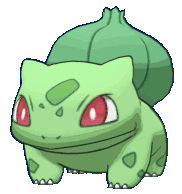
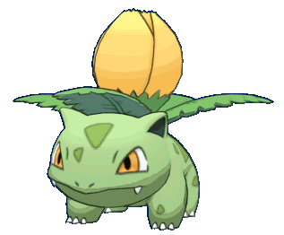
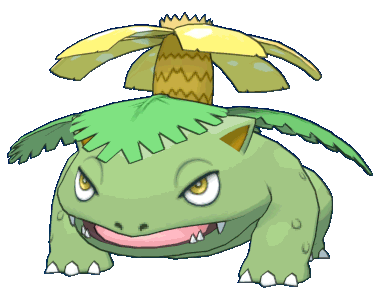
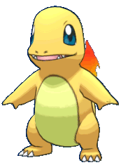
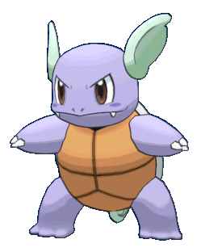
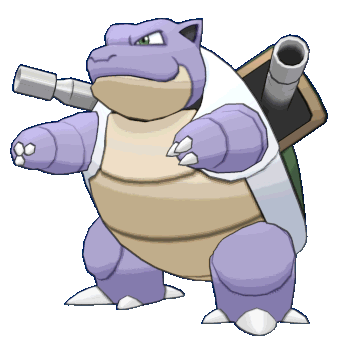
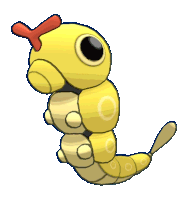

-
Bulbasaur #001
- Grama
- Veneno
Há uma semente de planta em suas costas desde o dia que este Pokémon nasce. A semente cresce lentamente.
-
Ivysaur #002
- Grama
- Veneno
Quando o bulbo em suas costas cresce, parece perder a capacidade de ficar em pé em suas patas traseiras.
-
Venusaur #003
- Grama
- Veneno
Sua planta floresce quando está absorvendo energia solar. Ele permanece em movimento para buscar a luz solar
-
Charmander #004
- Fogo
Tem preferência por coisas quentes. Quando chove, diz-se que o vapor jorra da ponta de sua cauda.
-
Charmeleon #005

- Fogo
Tem uma natureza bárbara. Na batalha, ele chicoteia sua cauda ardente e corta com garras afiadas.
-
Charizard #006

- Fogo
Ele cospe fogo que é quente o suficiente para derreter pedregulhos. Pode causar incêndios florestais soprando chamas.
-
Squirtle #007

- Água
Quando ele retrai seu longo pescoço em sua concha, ele esguicha água com força vigorosa.
-
Wartortle #008
- Água
É reconhecido como um símbolo de longevidade. Se sua concha tem algas, esse Wartortle é muito antigo.
-
Blastoise #009
- Água
Ele esmaga seu inimigo sob seu corpo pesado para causar desmaios. Em uma pitada, ele se retirará dentro de sua concha.
-
Caterpie #010
- Inseto
Para proteção, ele libera um fedor horrível da antena em sua cabeça para afastar os inimigos.
-
Metapod #011

- Inseto
Ele aguarda o momento de evoluir. Nesse estágio, ele só pode endurecer, então permanece imóvel para evitar ataques.
-
Butterfree #012

- Inseto
Ela adora o néctar das flores e consegue localizar manchas de flores que tenham até mesmo pequenas quantidades de pólen.